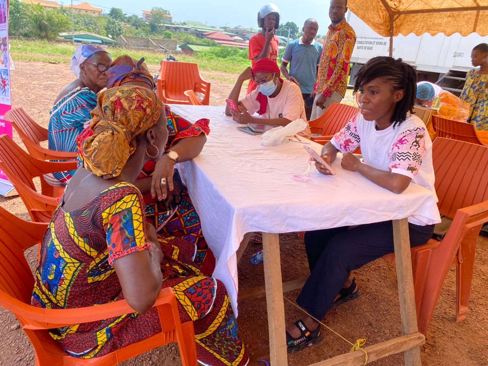

Autodidacte en informatique passionnée par l'intelligence artificielle, le développement web et les projets numériques à fort impact social. Impact Lead chez Care'in depuis plus de deux ans, j'accompagne les femmes grâce aux solutions numériques de santé.

Je suis Debora Magnon, autodidacte en informatique,
Impact Lead chez Care'in depuis plus de deux ans et passionnée par
l'Intelligence Artificielle.
J'ai participé à plusieurs campagnes de sensibilisation et de
dépistage du cancer féminin dans différentes villes de Côte d'Ivoire.
Mon rôle consistait à former les équipes, accompagner les femmes
dans l'utilisation de notre application et promouvoir le dépistage
précoce grâce aux technologies numériques.
Aujourd'hui, je développe également des projets en Python,
développement web et IA afin de créer des solutions utiles pour les
communautés africaines.
Des compétences techniques et humaines au service de l'impact
Développement d'applications, automatisation, analyse de données
HTML, CSS, JavaScript, création de sites et applications web
Machine Learning, NLP, modèles d'IA pour des solutions concrètes
Animation de campagnes de sensibilisation, formation d'équipes
SQL, Excel, analyse de données pour le reporting d'impact
Coordination d'équipes, suivi de projets, reporting
Un engagement constant pour la santé et l'innovation numérique
Responsable de l'impact social des programmes numériques de santé. Coordination des campagnes de sensibilisation au cancer féminin, formation des équipes terrain, accompagnement des utilisatrices.
Participation à la conception et au déploiement de solutions numériques pour le dépistage précoce. Animation d'ateliers de sensibilisation auprès des communautés.
Développement de petits projets en Python : outils d'analyse de données, automatisation de tâches, scripts pour la gestion de campagnes de sensibilisation.
Des initiatives concrètes au service des communautés
Sensibilisation au cancer du sein et du col de l'utérus dans 4 villes de Côte d'Ivoire.
Bot automatisé pour informer et orienter les femmes vers les centres de dépistage.
Outil de visualisation des données de santé pour le suivi des campagnes.
N'hésitez pas à me joindre pour toute collaboration ou question
guelableondebora01@email.com
+225 07 57 46 44 33
@guelableon-debora-magnon
Abidjan, Côte d'Ivoire